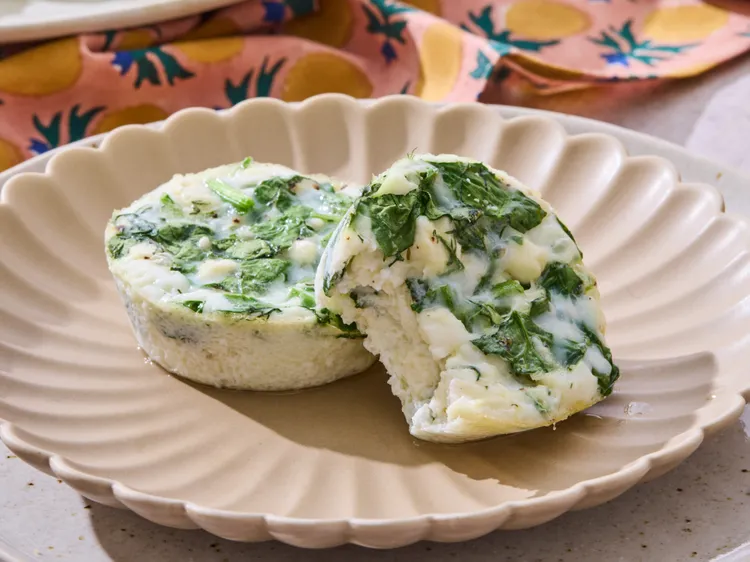

Spanakopita Egg Bites

Description
These spanakopita egg bites are made with feta, spinach, and fresh dill. They make the perfect grab and go breakfast.
Ingredients
- 1 cup chopped fresh spinach (2 ounces)
- 1 (8-ounce) block feta cheese, crumbled
- 1/4 cup chopped green onions
- 3 tablespoons chopped fresh dill
- 10 large eggs (or 2 cups egg whites)
- 1/2 cup milk
- 1 teaspoon freshly ground black pepper
- 1/4 teaspoon salt
Steps
-
Preheat the oven to 325 degrees F (165 degrees C). Generously grease twelve 2 1/2-inch muffin cups with cooking spray.
-
Combine spinach, feta, green onions, and dill in a bowl. Add 1/4 cup of the mixture to each muffin cup.
-
Whisk together eggs, milk, pepper, and salt in a large bowl until well blended.
-
Pour egg mixture over spinach mixture in each muffin cup.
-
Bake in the preheated oven until eggs are set, and an instant-read thermometer inserted into the center registers at least 160 degrees F (71 degrees C), 18 to 20 minutes.